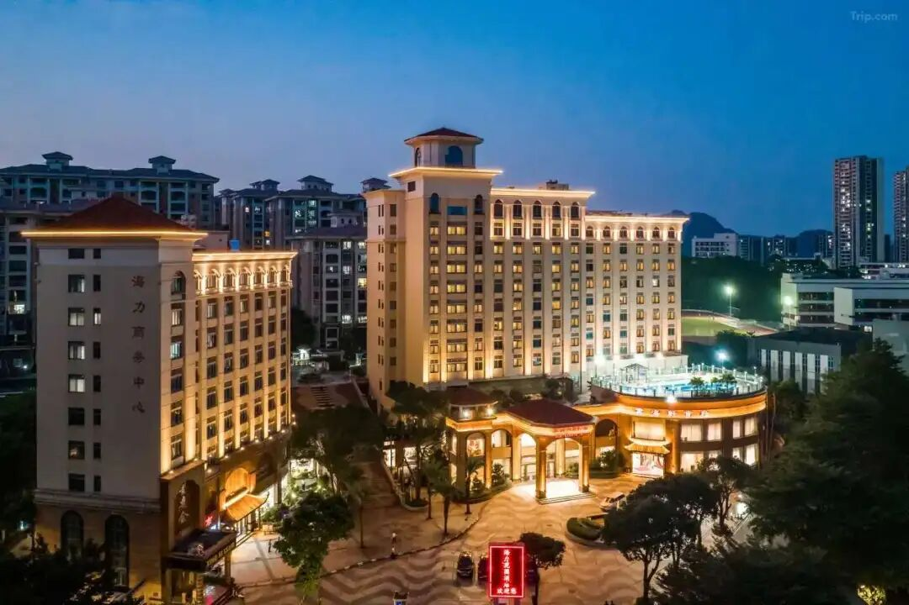
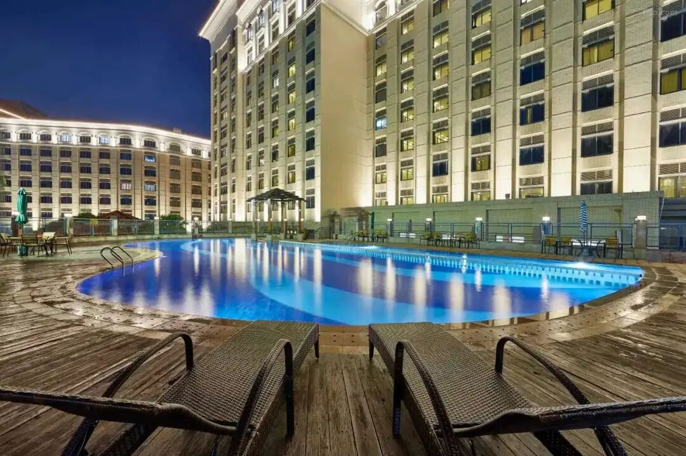
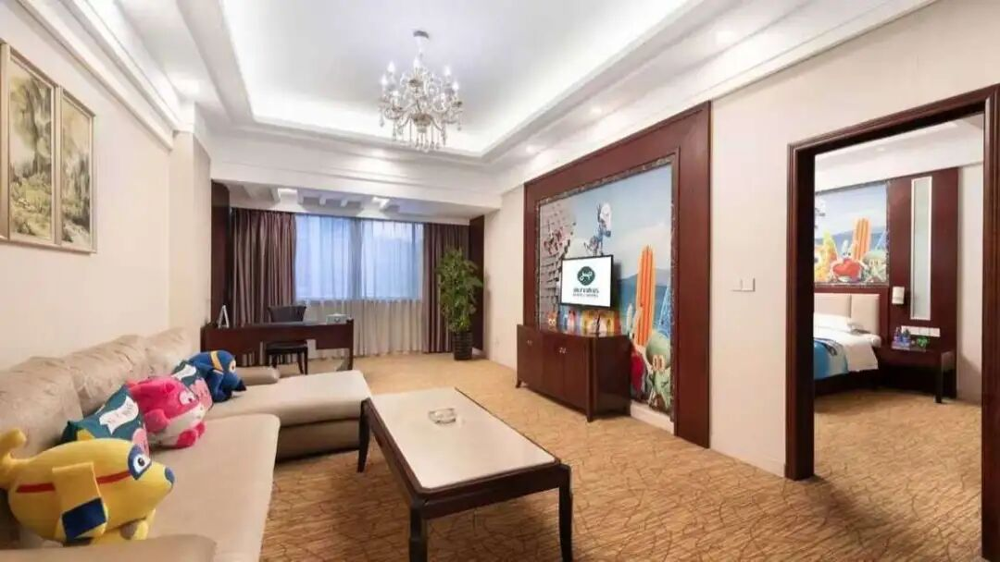
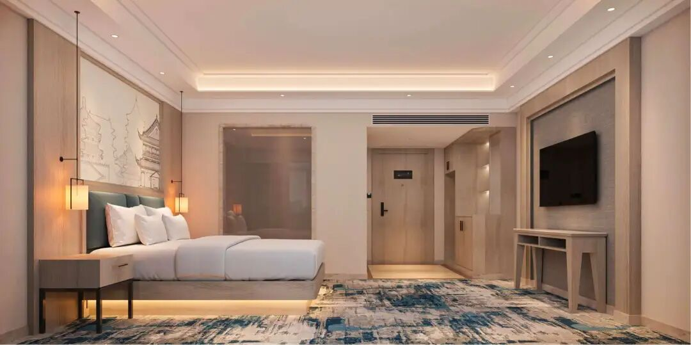
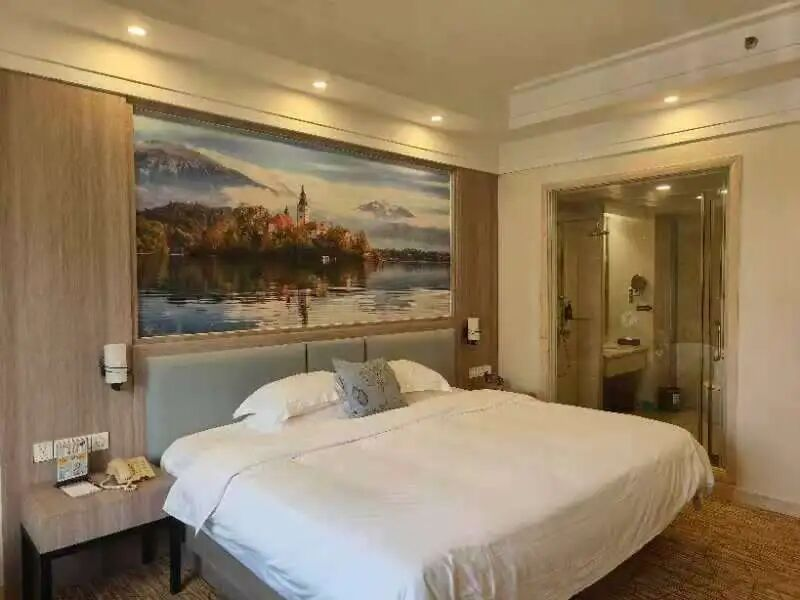

当主力客群悄然变化，老牌酒店该如何转身？广州海力花园酒店用一场"静悄悄的革命"，给出了一个关于重生与增长的满分答案。
一个亟待焕新的时代标杆
广州海力花园酒店，2012年开业，坐落于南沙自贸区核心地段。作为高星级商务酒店，配套设施完善，云海轩中餐厅更是获奖无数。然而随着市场环境变化，曾经辉煌的"政务风"装饰，已成为吸引新时代客流的屏障。

三大核心挑战
📉 客源结构剧变 — 原有政务客群锐减，急需开拓商务旅游多元化客源。
🎨 风格审美脱节 — 厚重红木风格与当代简约明快审美格格不入。
💰 预算与时间受限 — 无法承受长期停业损失，需严格控制预算。
为什么选择膜帮主覆膜方案？
面对挑战，酒店方曾考虑传统"拆旧换新"，但高昂成本、漫长工期和巨大浪费让其望而却步。最终选择了膜帮主木纹装饰膜整体翻新方案——不仅是一次材料更换，更是一套"控本利旧+设计赋能"的系统性解决方案。
| 考量维度 | 传统拆旧换新 | 膜帮主覆膜方案 |
|---|---|---|
| 工期 | 需停业数月 | 边经营边改造 |
| 成本 | 极高（拆除+新购+清运） | 仅为传统方案一小部分 |
| 环保 | 大量建筑垃圾 | 零垃圾零废弃 |
| 效果 | 新旧家具搭配风险 | 设计先行，完全可控 |

不止于"贴膜"，更是空间重塑
深度诊断与定位设计 — 基于"从政务向商旅休闲转型"定位，重新设计客房与公区空间。
魔术般的覆膜焕新 — 200间客房及公区红木家具直接覆膜，深红木纹→浅橡木/高级灰/暖咖，瞬间"减龄"十年。
精细化分区施工 — 周密滚动计划，分层分区作业。酒店大堂餐厅正常运营，客人几乎无感。

颜值与业绩的双重提升
客房出租率显著提升，OTA平台商务及休闲游客增加。客户好评率上涨，新老客户均对焕新环境满意。以极低投入和零停业损失实现了产品力跨越式升级。
